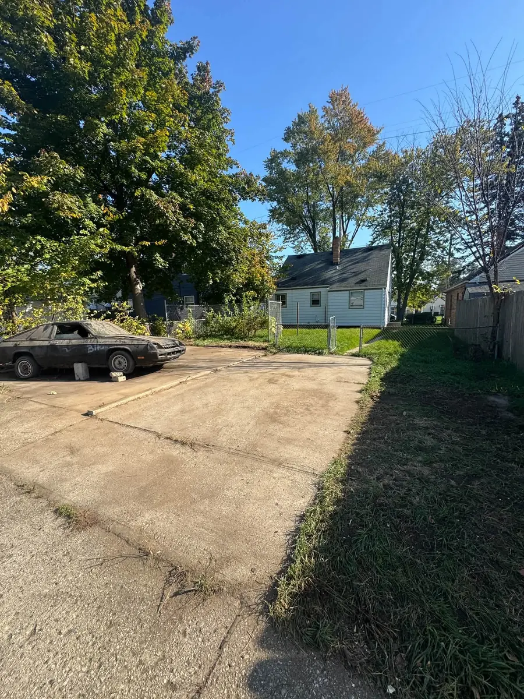
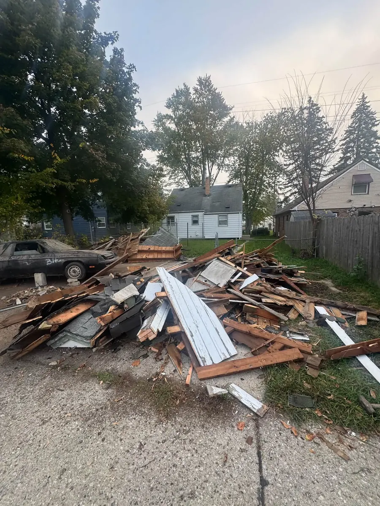
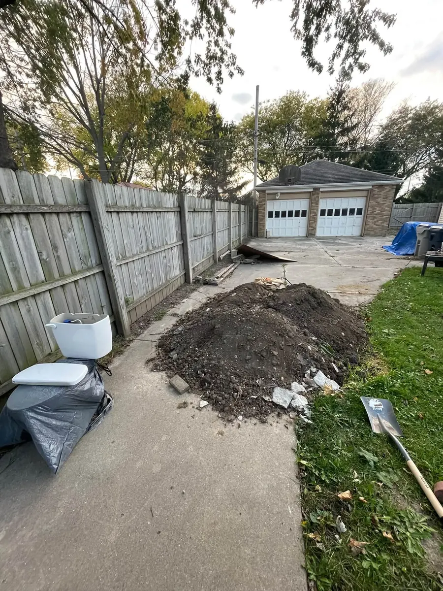
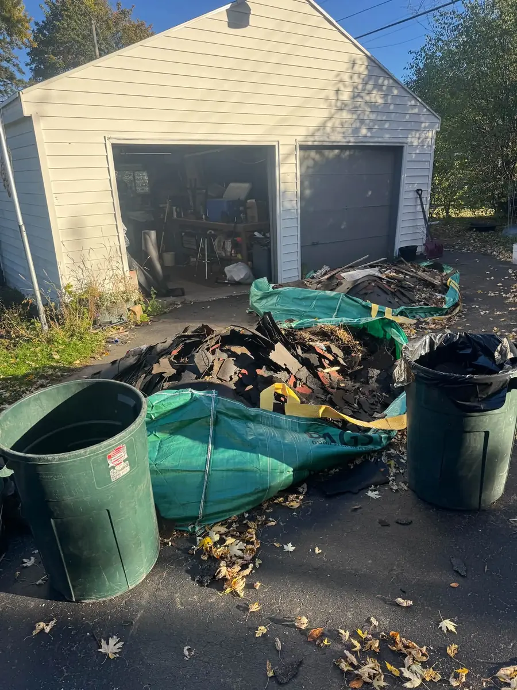

Construction Debris Removal
A driveway pile of scrap lumber and siding loaded and hauled off.
Services
Company
Finished a remodel, tore out a patio or dug up the yard? We load and haul away drywall, lumber, flooring, shingles, broken concrete, dirt and sod across Milwaukee, Waukesha, Racine and Ozaukee Counties, with no dumpster sitting in your driveway.

A dumpster sits in your driveway for days, and you still have to load it yourself. We show up, do all the loading and haul it away the same visit. That works well for DIY remodels, contractors finishing a job, and landscaping or patio projects that leave piles of dirt, sod and broken concrete behind.
Need something torn down first? See our light demolition services for sheds, decks, fences and more.
Don't see your item? Text us a photo and we'll let you know.
A driveway debris pile before and after, plus a few of the piles we haul.

A driveway pile of scrap lumber and siding loaded and hauled off.


Heavy materials like dirt, rocks, sod, broken concrete, brick and shingles are priced by weight, since even a small pile can weigh a lot. Other construction debris, like lumber, drywall and flooring, is priced per job based on how much there is and how hard it is to load.
Text a photo of the pile to (414) 388-6289 and tell us roughly how much there is. For dirt or sod, the length, width and depth of the area helps. We'll get back to you with a free estimate. Mixed in with regular junk? We can take it all in the same trip.
Lumber, drywall and flooring are bulky but manageable. Dirt, concrete, brick and shingles are much heavier, so a smaller pile can take just as much work and hauling capacity.
A few wheelbarrows of dirt and a whole torn-out patio are very different jobs. Photos and rough measurements help us give you an accurate price before we come out.
A pile in the driveway loads faster than debris in a basement or a backyard we have to carry it out of. Let us know where it is and how we get to it.
Dirt, rocks, concrete, brick and shingles are priced by weight. Other construction debris is priced per job based on how much there is and how hard it is to load. Text a photo to (414) 388-6289 for a free estimate.
Yes. Dirt, sod and rocks are priced by weight, so send a photo and let us know the rough size of the pile.
Yes, as long as it's already broken up, like concrete, brick and block left over from a project. We don't break up slabs, patios or driveways.
Yes, piles of old shingles, like the ones left on the ground after a roofing job. We don't tear shingles off roofs.
Yes. We can haul away leftover debris after a remodel or project so you don't have to rent a dumpster. We're licensed and insured and can provide a W-9 and an itemized invoice.
We can't take hazardous materials like paint, chemicals or fuel. If you're not sure about something, text us a photo and we'll let you know.
Send a photo to (414) 388-6289 and we'll get back to you with a price, usually within the hour.